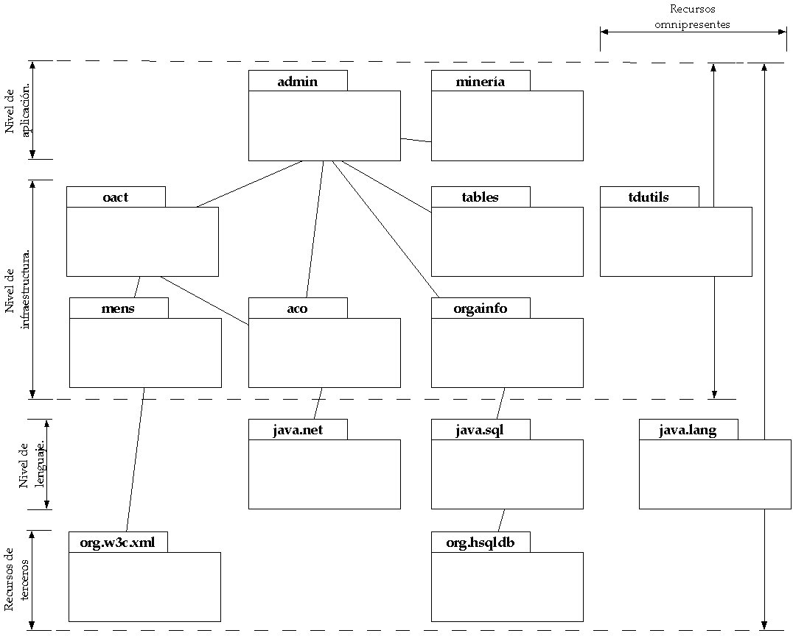

tdderiveSistema distribuido débilmente acoplado para el descubrimiento de conocimiento.
Este sistema ofrece un servicio de minería de datos
que aprovecha el procesamiento distribuido y paralelo entre varias
computadoras huéspedes de un agente de tdderive.
En este documento se detalla, a nivel de implementación, el
marco de trabajo con el cual se ha construido el sistema tdderive.
La siguiente figura muestra los paquetes cuyas clases implementan
el sistema tdderive, pueden observarse las relaciones
entre éstas.
